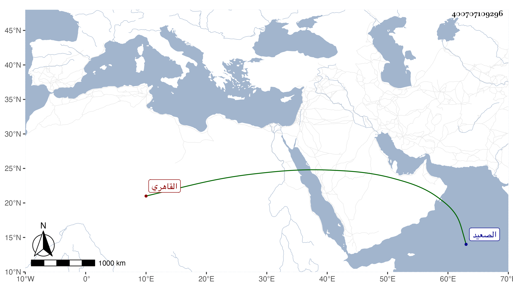

0902Sakhawi.DawLamic.ITO20230111-ara1.EIS1600.400707109296
Biography ID: 400707109296
994
يحيى بن علي بن قرا برج الشرف الطشلاقي القاهري . عامي ينظم الأزجال والمواليا ونحو ذلك ويأتي منه بما يستحسن مع كونه غاية في الفاقة والهيئة الرثة وهو صاحب تلك المنصوبة في القاضي الموازية لما عمله غيره في الفقيه والجندي وقد كتبها عنه المحب بن جناق الحنبلي وكان ممن يكثر التردد إليه وانتفع به في ذلك وسمعت منه بعضها وأولها :
| من قال أنا قاضي مصاب لقد أصاب | أنا الفقيه واسمي عميد من الصعيد |
| كن والدي يرعى الحصيد مع الدواب |
وكذا سمعت من نظمه أشياء ومن ذلك قصيدة قالها في المناوي حين ختمت عنده قراءة السيرة النبوية فيما أظن وفيها في مدحي عدة أبيات . مات قبل السبعين بكثير .
